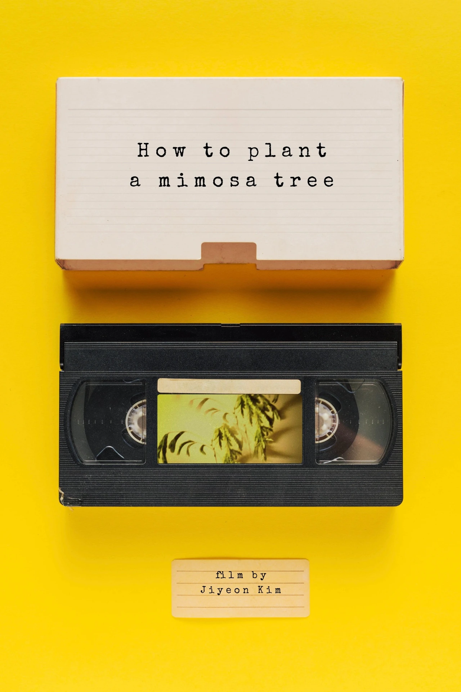
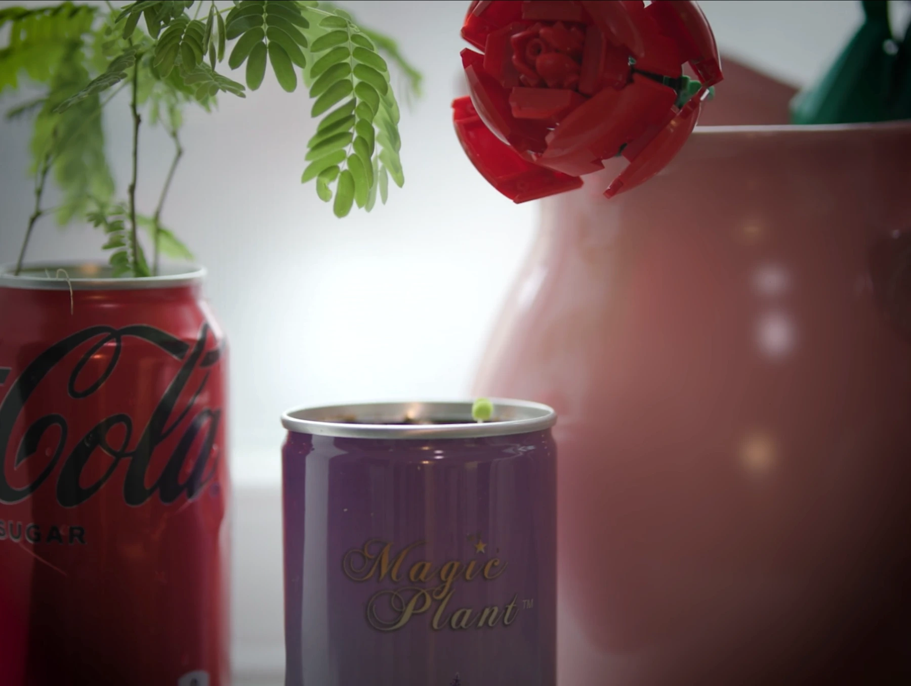

A FILM BY JIYEON KIM
How to Plant
a Mimosa Tree
Synopsis
Mimosa Tree knows how to sleep in the nighttime.
Watch film ↓Screenings
OFFICIAL SELECTION · 2025
Science Museum of Boston
“Being Human: An Evening of Storytelling and Reading”
Watch the film
Open on Vimeo ↗Film still

Credits
- Director / DP
- Jiyeon Kim
- AD
- Zayan Agha
- Camera Operator
- Marvin Xu
- Executive Producer
- Tushar Gidwani
- Gardener, you, and me
- Minyu Chen